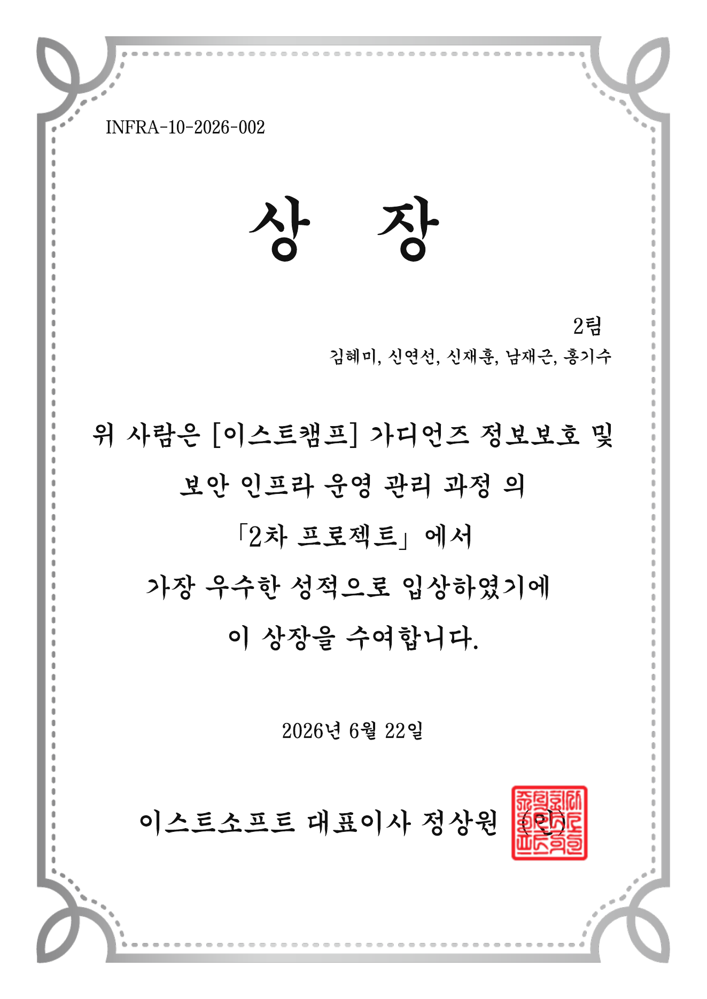

수상 · 01
2차 프로젝트 우수상
취약점 분석과 재현, 시스템 점검 스크립트의 기본 틀 작성, 결과보고서 정리에 참여했습니다. 팀원들과 작업한 결과 2차 프로젝트에서 우수상을 받았습니다.
2차 프로젝트 보기 →수상 기록
프로젝트와 워게임을 진행하며 팀원들과 함께 받은 결과입니다.

수상 · 01
취약점 분석과 재현, 시스템 점검 스크립트의 기본 틀 작성, 결과보고서 정리에 참여했습니다. 팀원들과 작업한 결과 2차 프로젝트에서 우수상을 받았습니다.
2차 프로젝트 보기 →
수상 · 02
팀원 한 명이 서버 통합을 맡고, 나머지 팀원들이 챌린지를 나누어 제작했습니다. 저는 09번 보안 설정 오류와 10번 공급망 공격 문제를 맡았습니다. 대회 당일 ::6 팀으로 전 문제를 풀어 1위를 기록했습니다.
제작 및 풀이 기록 보기 →